眼见为虚
你看到的，是谁想让你看到的
西周的周幽王，为了逗宠妃褒姒笑，干了一件蠢事。
他点燃了烽火——那是边疆告急、喊诸侯带兵来救的信号，轻易不能点。
诸侯们火急火燎赶来，却发现根本没有敌人，只是博美人一笑。褒姒果然笑了，诸侯们的脸却黑了。
后来敌人真的来了，周幽王再点烽火——没有一个人来救他。西周就这么亡了。假消息最毒的代价，是让真的也没人信了。
在印刷术发明前，欧洲的书全靠人用手一个字一个字抄。
一本书要抄好几个月，贵得吓人，只有教会和贵族买得起。
谁掌握了抄书的权力，谁就掌握了'什么是知识'。普通人看不到书，只能听教士说书里有什么——他说什么，你就得信什么。
这是一种很隐蔽的权力：控制了信息的入口，就控制了人的脑子。
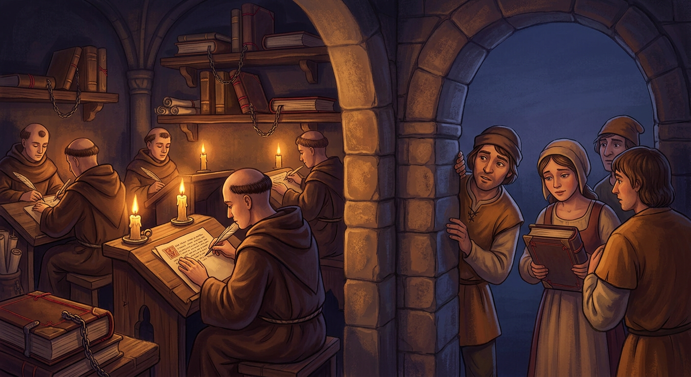
1440年前后，德国人古登堡造出了活字印刷机。
以前抄一本书要几个月，现在一天能印几百本。书一下子便宜了，普通人也买得起了。
结果怎样？知识像决堤的水一样涌出来。马丁·路德写的批评教会的小册子，两个星期传遍德国——这在抄书时代想都不敢想。
教会对信息的垄断，被一台机器砸得粉碎。每当信息变便宜，垄断者的墙就会塌。这在《阶级的秘密》里我们也讲过。
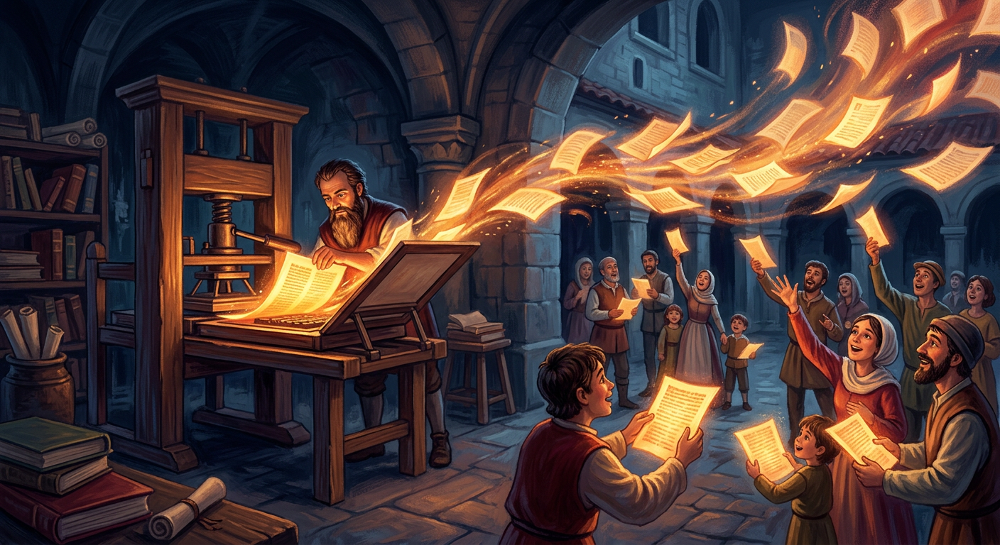
别以为标题党是网络时代的产物，一百多年前的美国报纸就玩得很溜了。
当时两家大报纸为了抢读者，比赛谁的标题更夸张、更煽情、更吓人。因为报上常印一个穿黄衣服的漫画小孩，被人叫'黄色新闻'。
它们甚至拼命渲染'西班牙威胁'，煽风点火，硬是把美国舆论推向了战争。
看出来了吗？为了'点击量'（那时候叫销量），媒体可以牺牲真相。这个毛病，到今天一点没改。
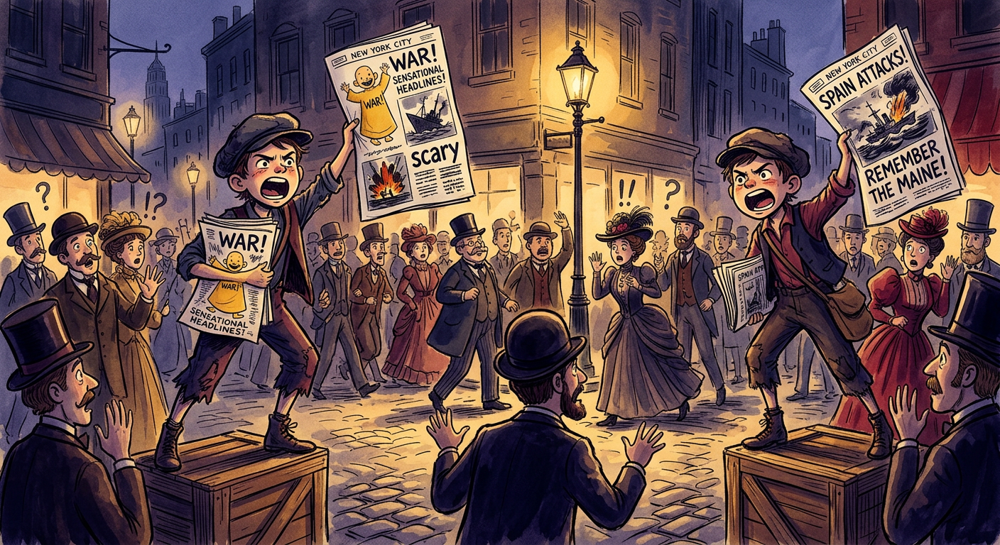
无线电发明后，信息第一次可以同时送进千家万户。
这本来是好事。可1930年代的德国，纳粹把它用到了极致：让收音机变得极便宜，家家都有，然后天天在广播里灌输仇恨和谎言。
同一个声音，重复一千遍，很多人就把它当成了真理。
这是一个可怕的发现：谎言重复得够多、传得够广，就能伪装成真相。渠道越强大，被滥用的后果越可怕。
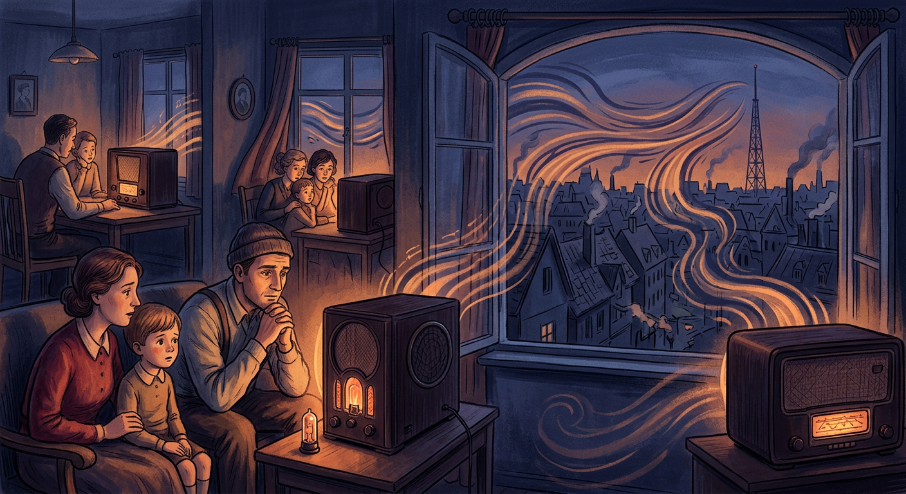
电视来了，信息从'听的'变成'看的'。这又一次改变了权力的游戏。
1960年，美国第一次电视直播总统辩论。收音机前的听众觉得尼克松赢了；可看电视的人，看到的是肯尼迪更精神、更上镜，于是认定肯尼迪赢。
内容差不多，赢的却是'看起来更好'的那个。
电视教会政客一件事：形象比观点重要，画面比真相有力。从此，'看起来怎样'越来越压倒'实际是怎样'。
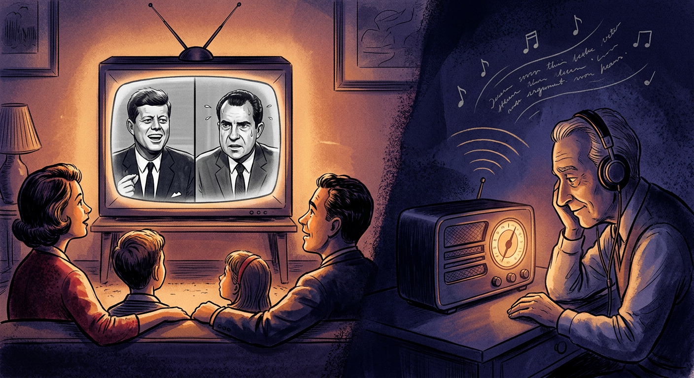
互联网来了，彻底变了天：以前只有报社、电视台能发声，现在人人拿起手机就能发。
这当然是巨大的解放——垄断被打破了，普通人也有了话筒。
可新问题跟着来了：谁都能说，那谁说的是真的？信息从'太少'变成了'太多'，真的假的混在一起，淹得你喘不过气。
过去的问题是'看不到'，现在的问题是'看不过来、分不清'。信息时代，稀缺的不再是信息，而是分辨真假的能力。
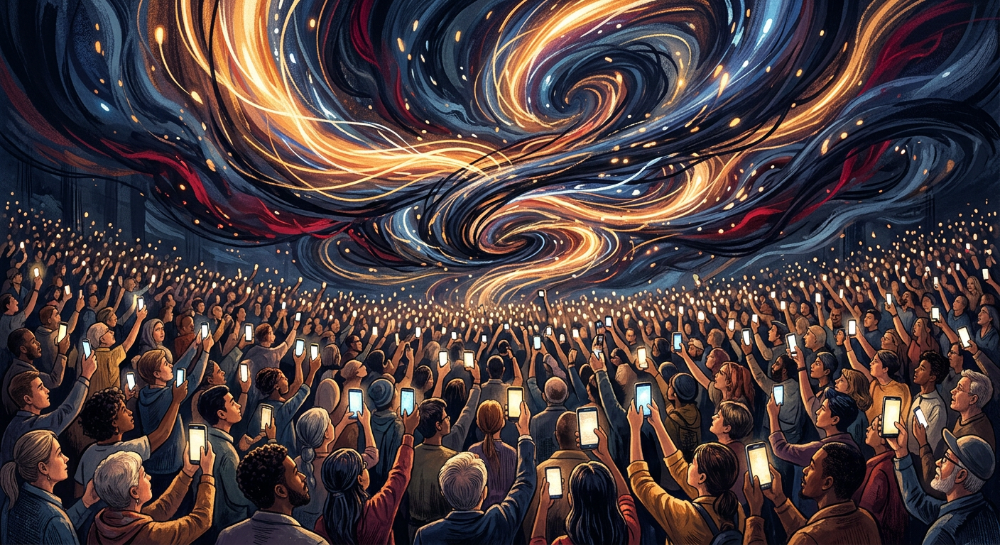
信息太多了，看不完，于是平台派出了'算法'帮你挑。
它像个特别懂你的服务员：你多看两眼猫，它就推一堆猫；你点开一个球星，它就塞满球星。你越爱看什么，它越喂你什么。
听起来贴心，对吧？但你想过没有——它关心的不是'你该知道什么'，而是'什么能让你一直看下去'，因为你看得越久，它越赚钱。
于是，你爱看的越推越多，你不一样、但也许更重要的东西，悄悄从眼前消失了。
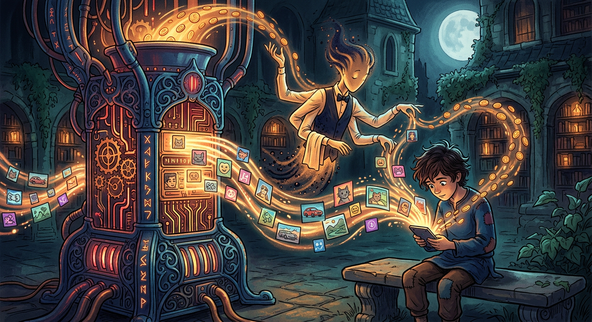
算法天天喂你爱看的，时间一长，会发生什么？
你会像住进一个透明的气泡里：气泡里全是你认同的观点、喜欢的东西，舒舒服服。
可气泡外的世界——不一样的想法、你没见过的风景、能纠正你的真话——你全都看不见了。
更麻烦的是，气泡里的人容易觉得'全世界都和我想的一样'，遇到不同意见就觉得对方不可理喻。大家越来越吵、越来越对立。还记得吗？这正是《环境的秘密》里讲过的环境的力量。
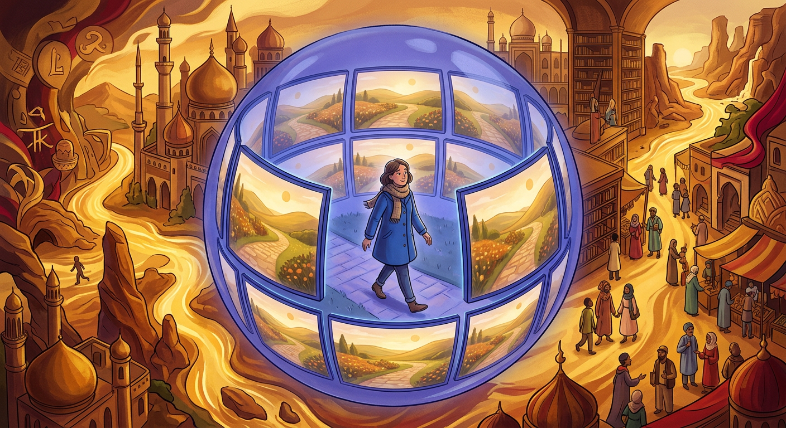
有人研究过：在社交媒体上，假消息比真消息传得更快、更远、更广。
为什么？因为真相常常是平淡的，而假消息可以随便编，怎么刺激怎么来：更吓人、更解气、更离奇、更符合你想听的。
人天生就爱传播刺激的事。假消息正好掐住了这个弱点，像病毒一样疯传。
所以记住一个规律：一条消息越是让你特别激动、特别想立刻转发，越要先打个问号。情绪，是假消息最好的燃料。
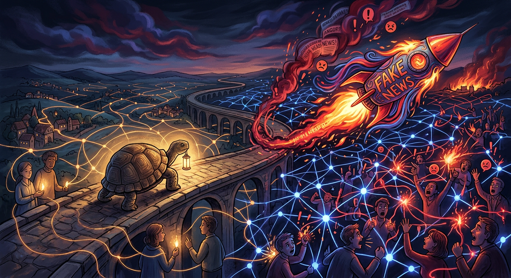
以前我们说'耳听为虚，眼见为实'。可到了AI时代，这句话不灵了。
现在的AI，能做出以假乱真的假照片、假视频、假声音：能让一个名人'说'他从没说过的话，让一个人'出现'在他从没去过的地方，连你妈妈的声音都能模仿。
这叫'深度伪造'。以后你看到一段视频，哪怕画面清清楚楚，也得问一句：这是真的吗？
连眼睛都不能全信的时代，什么最可靠？是你脑子的判断，和多方求证的耐心。这是2024年以后，每个人都必须练的本事。
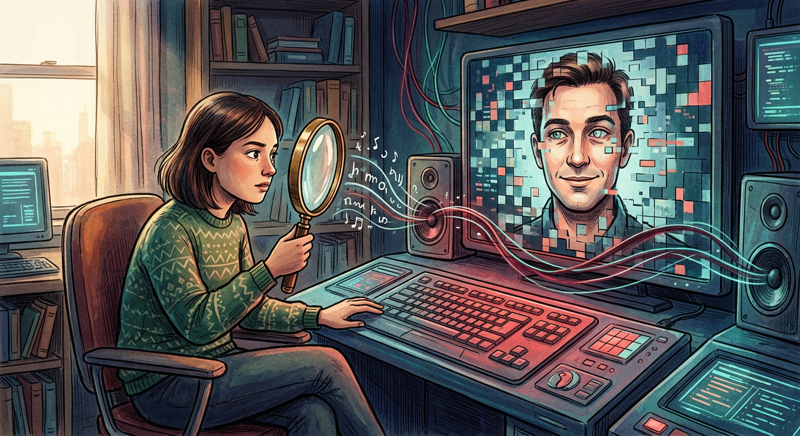
点点，从烽火台讲到AI深伪，这本书其实只讲了一件事：你看到的，未必是全部的真相，也未必是真的。
几千年来，总有人想控制你看到什么——为的是控制你怎么想。从抄经的教士，到煽情的报纸，到今天的算法和AI。
那怎么办？给你三个小办法：
一、看到特别激动的消息，先停三秒，问一句'真的吗'。
二、别只在一个地方看，多找几个来源对对。三、分清'事实'和'观点'：'今天下雨'是事实，'下雨真讨厌'是观点。
愿你在信息的汪洋里，不当随波逐流的浮萍，做一个有锚的人。眼见为虚，脑证为实。
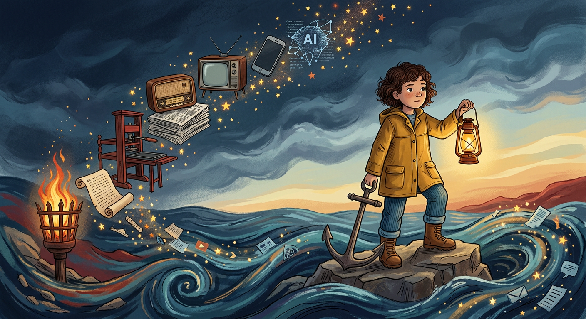